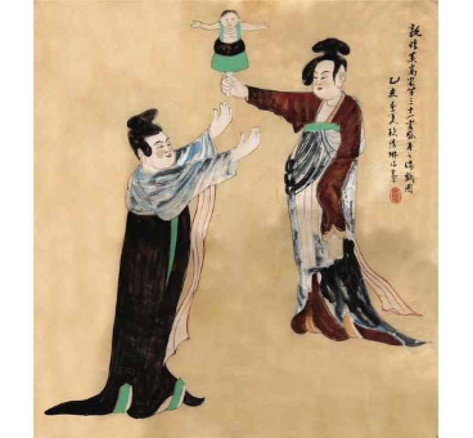
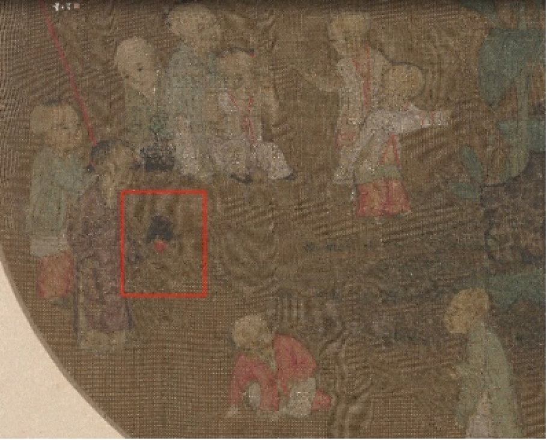

东晋
《拾遗记》中所记录的："南陲之南，有扶娄之国，其人善机巧变化……或于掌中备百戏之乐，宛转屈曲于指间。
人形或长数分，或复数寸，神怪倏忽，玄丽于时……"
五 代
五代晋江人谭峭所著《化书·海鱼》载:“观傀儡之假而不自疑.......”

唐·敦煌莫高窟第31窟壁画局部图
唐代

宋·《蕉石婴戏图》
宋代
南 宋
兴化人刘克庄(1187-1269)在其所作诗歌《己未元日》中说到:“久向优场脱戏衫，亦无布袋杖头担。”
明 代
《永春县志》卷十八《文化志) 载:“明天启年间，永春有两台木偶戏: 一是太平村李顺父子的布袋木偶;
一是卿园村张森兄弟的提线木偶。”
清 代
《晋江县志》卷之七十二《风俗志》载:“木头戏，俗名傀儡。近复有掌中弄巧，俗名布袋戏演唱一场各成音节。”